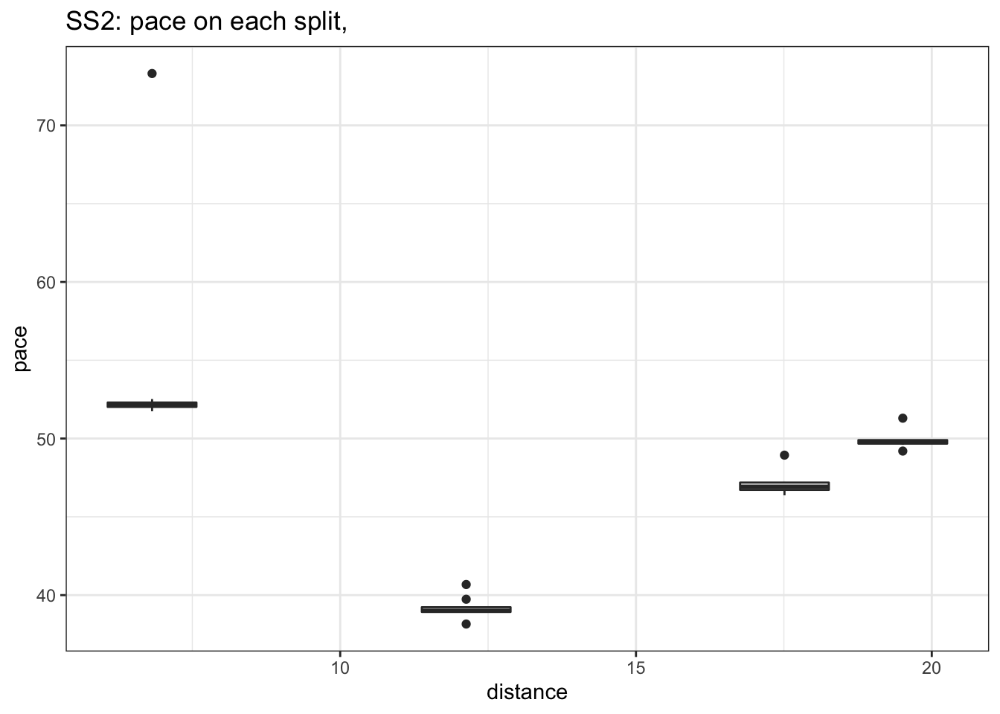
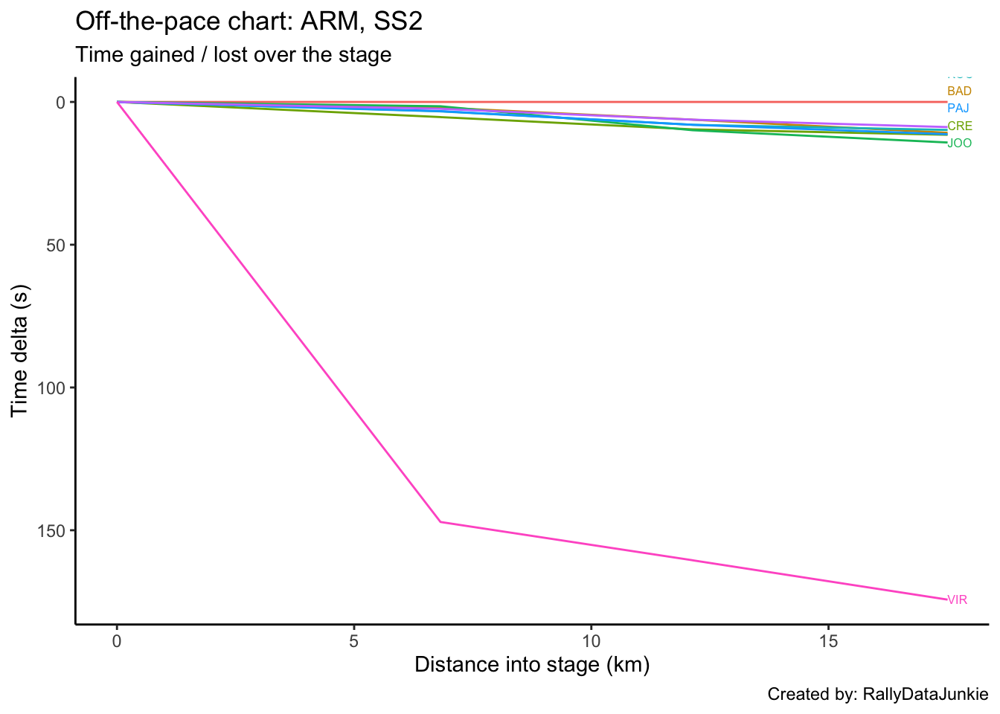
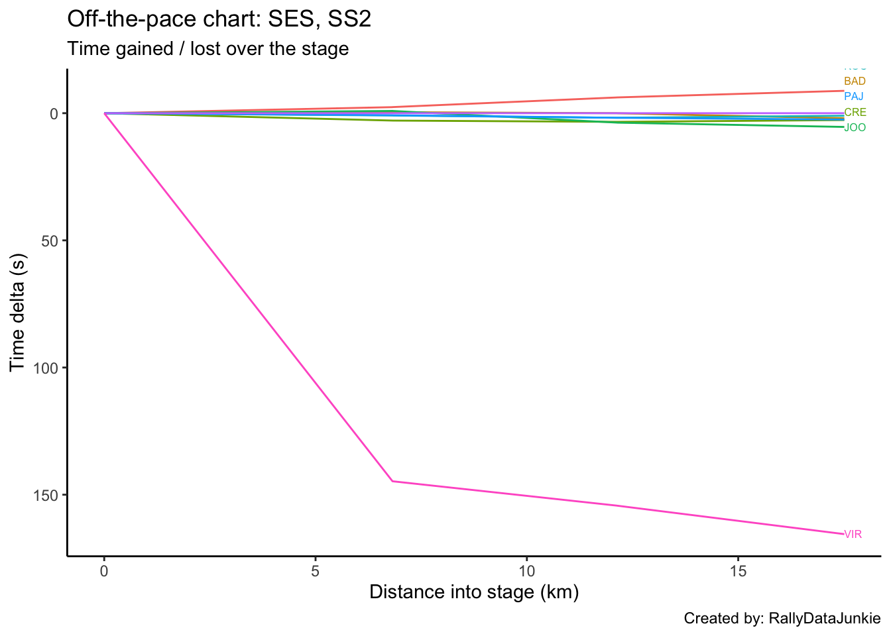
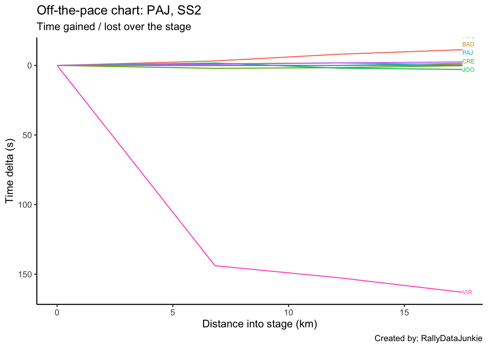
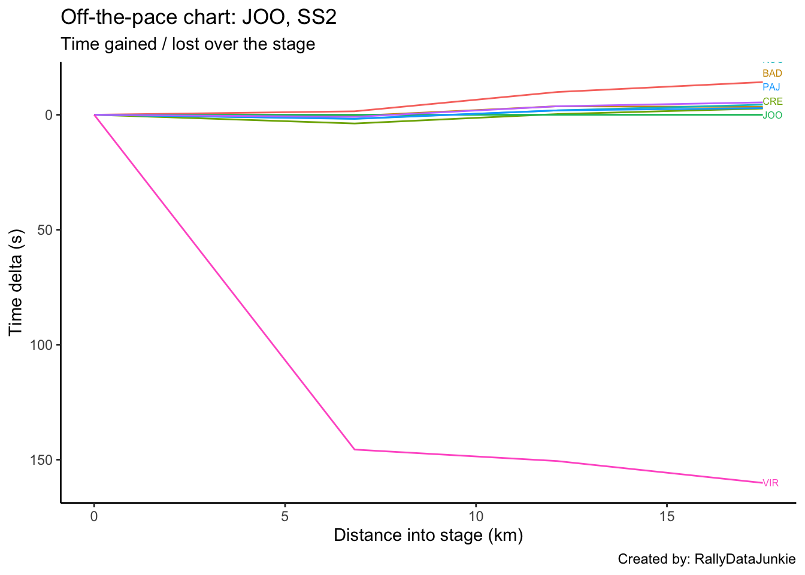
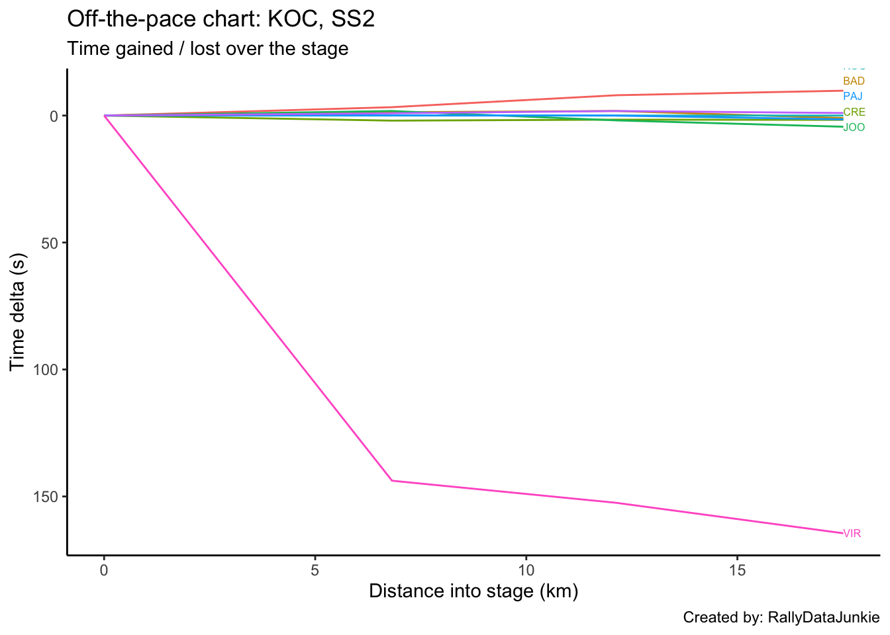
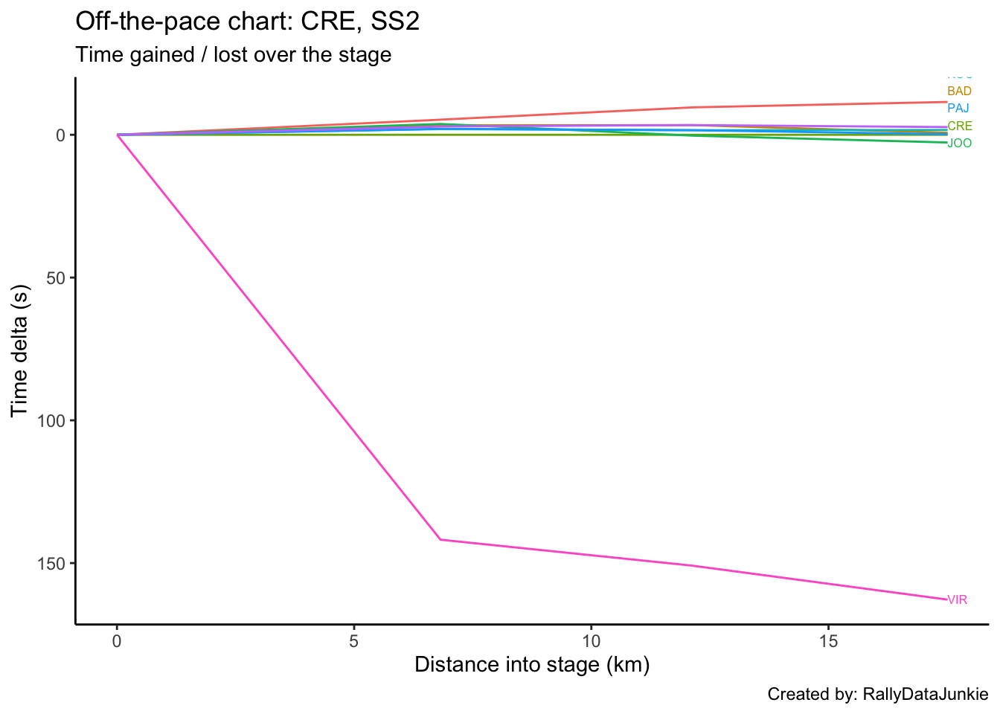
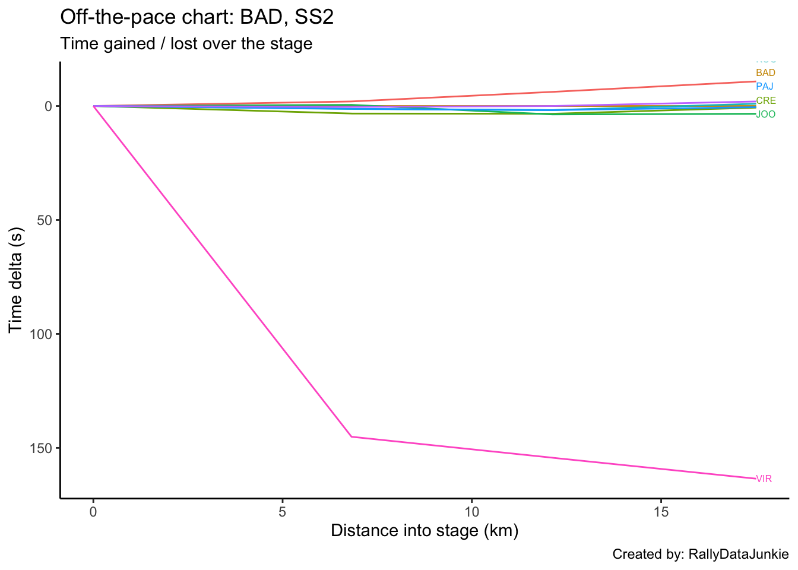
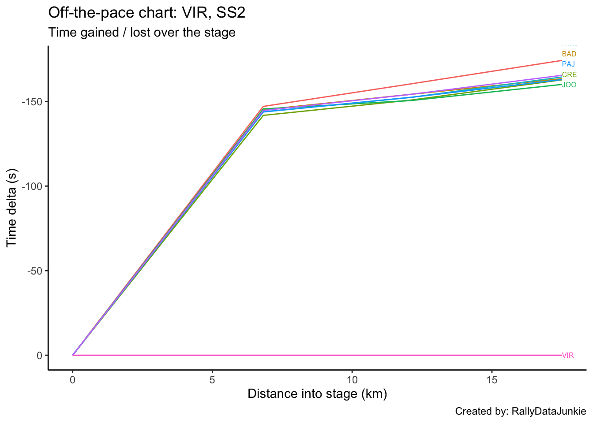

2 SS2 Results
| Pos | Car | Code | Time (s) | Gap | Diff |
|---|---|---|---|---|---|
| 1 | 59 | ARM | 904.2 | 125.2 | 1.4 |
| 2 | 60 | SES | 913.4 | 134.4 | 3.2 |
| 3 | 63 | KOC | 914.2 | 135.2 | 0.8 |
| 4 | 64 | CRE | 914.9 | 135.9 | 0.1 |
| 5 | 65 | BAD | 915.6 | 136.6 | 0.6 |
| 6 | 61 | PAJ | 915.8 | 136.8 | 0.2 |
| 7 | 62 | JOO | 919.0 | 140.0 | 1.0 |
| 8 | 66 | VIR | 1081.9 | 302.9 | 86.9 |
2.1 Stage SS2 Splits Analysis
Reports on splits
2.1.1 Split Locations
Length of each split section in km:
| full_split_distances | stage_dist | |
|---|---|---|
| split_1 | 6.82 | 6.82 |
| split_2 | 5.31 | 12.13 |
| split_3 | 5.38 | 17.51 |
| split_N | 2.00 | 19.51 |
2.1.2 Stage Split Times & Result
Summary of stage split times and overall stage result:
| code | split_1 | split_2 | split_3 | split_N | diffFirstS | position |
|---|---|---|---|---|---|---|
| ARM | 352.9 | 555.5 | 805.0 | 904.2 | 0.0 | 41 |
| SES | 355.3 | 561.7 | 813.8 | 913.4 | 9.2 | 46 |
| KOC | 356.2 | 563.5 | 814.8 | 914.2 | 10.0 | 47 |
| CRE | 358.2 | 565.1 | 816.5 | 914.9 | 10.7 | 49 |
| BAD | 354.9 | 561.7 | 815.8 | 915.6 | 11.4 | 51 |
| PAJ | 356.1 | 563.5 | 816.3 | 915.8 | 11.6 | 52 |
| JOO | 354.4 | 565.4 | 819.2 | 919.0 | 14.8 | 54 |
| VIR | 500.0 | 716.0 | 979.3 | 1081.9 | 177.7 | 71 |
2.1.3 Split Time Rankings
Rank of each split time:
| code | split_1 | split_2 | split_3 | split_N |
|---|---|---|---|---|
| ARM | 1 | 1 | 1 | 1 |
| SES | 4 | 2 | 2 | 2 |
| KOC | 6 | 3 | 3 | 3 |
| CRE | 7 | 4 | 6 | 4 |
| BAD | 3 | 2 | 4 | 5 |
| PAJ | 5 | 3 | 5 | 6 |
| JOO | 2 | 5 | 7 | 7 |
| VIR | 8 | 6 | 8 | 8 |
Rank on each split section:
| code | split_1 | split_2 | split_3 | split_N |
|---|---|---|---|---|
| ARM | 1 | 1 | 1 | 1 |
| SES | 4 | 2 | 2 | 2 |
| KOC | 6 | 3 | 3 | 3 |
| CRE | 7 | 4 | 6 | 4 |
| BAD | 3 | 2 | 4 | 5 |
| PAJ | 5 | 3 | 5 | 6 |
| JOO | 2 | 5 | 7 | 7 |
| VIR | 8 | 6 | 8 | 8 |
2.1.4 Split Section Pace
Pace is measured in seconds per kilometer, which is to say, how long it takes to complete each kilometer (lower is better):
| code | split_1 | split_2 | split_3 | split_N |
|---|---|---|---|---|
| ARM | 51.74 | 38.15 | 46.38 | 49.60 |
| SES | 52.10 | 38.87 | 46.86 | 49.80 |
| KOC | 52.23 | 39.04 | 46.71 | 49.70 |
| CRE | 52.52 | 38.96 | 46.73 | 49.20 |
| BAD | 52.04 | 38.95 | 47.23 | 49.90 |
| PAJ | 52.21 | 39.06 | 46.99 | 49.75 |
| JOO | 51.96 | 39.74 | 47.17 | 49.90 |
| VIR | 73.31 | 40.68 | 48.94 | 51.30 |
2.1.5 Ultimate Stage Comparisons
Split time comparisons relative to various ultimage stage time calculations.
These views provide various ways of comparing the performance of each driver to various ghost drivers:
- best recorded split time at each split (ultimate actuals): gives an estimate of how well the drivers split times compare with each first ranked split time (time into stage at each split);
- fastest time going from one split to the next (ultimate sections): gives an estimate of how quickly each driver completed each split section relative to the quickest time recorded completing that split section (time taken to go from one split point to the next);
- accumulated ultimate sections times: gives and estimate of how quickly the driver is going relative to the fastest possible completion of the stage based on accumulated ultimate split section times.
2.1.5.1 Ultimate Actuals
Driver times compared to the first ranked recorded split time at each split:
| code | split_1 | split_2 | split_3 | split_N |
|---|---|---|---|---|
| ARM | 0.0 | 0.0 | 0.0 | 0.0 |
| SES | 2.4 | 6.2 | 8.8 | 9.2 |
| KOC | 3.3 | 8.0 | 9.8 | 10.0 |
| CRE | 5.3 | 9.6 | 11.5 | 10.7 |
| BAD | 2.0 | 6.2 | 10.8 | 11.4 |
| PAJ | 3.2 | 8.0 | 11.3 | 11.6 |
| JOO | 1.5 | 9.9 | 14.2 | 14.8 |
| VIR | 147.1 | 160.5 | 174.3 | 177.7 |
| ultimate | 0.0 | 0.0 | 0.0 | 0.0 |
2.1.5.2 Ultimate Sections
Split durations rebased relative to the fastest transit of each split section:
| code | split_1 | split_2 | split_3 | split_N |
|---|---|---|---|---|
| ARM | 0.0 | 0.0 | 0.0 | 0.8 |
| SES | 2.4 | 3.8 | 2.6 | 1.2 |
| KOC | 3.3 | 4.7 | 1.8 | 1.0 |
| CRE | 5.3 | 4.3 | 1.9 | 0.0 |
| BAD | 2.0 | 4.2 | 4.6 | 1.4 |
| PAJ | 3.2 | 4.8 | 3.3 | 1.1 |
| JOO | 1.5 | 8.4 | 4.3 | 1.4 |
| VIR | 147.1 | 13.4 | 13.8 | 4.2 |
| ultimate | 0.0 | 0.0 | 0.0 | 0.0 |
2.1.5.3 Ultimate Accumulated Sections
Actual split times relative to the accumulated ultimate split section times:
| code | split_1 | split_2 | split_3 | split_N |
|---|---|---|---|---|
| ARM | 0.0 | 0.0 | 0.0 | 0.8 |
| SES | 2.4 | 6.2 | 8.8 | 10.0 |
| KOC | 3.3 | 8.0 | 9.8 | 10.8 |
| CRE | 5.3 | 9.6 | 11.5 | 11.5 |
| BAD | 2.0 | 6.2 | 10.8 | 12.2 |
| PAJ | 3.2 | 8.0 | 11.3 | 12.4 |
| JOO | 1.5 | 9.9 | 14.2 | 15.6 |
| VIR | 147.1 | 160.5 | 174.3 | 178.5 |
| ultimate | 0.0 | 0.0 | 0.0 | 0.0 |
2.1.6 Split Section Pace Distribution
Distribution of pace values for each split section:

2.2 Driver Report, SS2 - ARM
Stage report for ARM.
| Pos | Car | Code | Time (s) | Gap | Diff |
|---|---|---|---|---|---|
| 41 | 59 | ARM | 0.0 | 0.0 | 1.4 |
| 46 | 60 | SES | 9.2 | 9.2 | 3.2 |
| 47 | 63 | KOC | 10.0 | 10.0 | 0.8 |
| 49 | 64 | CRE | 10.7 | 10.7 | 0.1 |
| 51 | 65 | BAD | 11.4 | 11.4 | 0.6 |
| 52 | 61 | PAJ | 11.6 | 11.6 | 0.2 |
| 54 | 62 | JOO | 14.8 | 14.8 | 1.0 |
| 71 | 66 | VIR | 177.7 | 177.7 | 86.9 |
2.2.1 Rebased Split Times
ARMs delta at each split compared to other drivers.
| code | split_1 | split_2 | split_3 | split_N |
|---|---|---|---|---|
| ARM | 0.0 | 0.0 | 0.0 | 0.0 |
| SES | 2.4 | 6.2 | 8.8 | 9.2 |
| KOC | 3.3 | 8.0 | 9.8 | 10.0 |
| CRE | 5.3 | 9.6 | 11.5 | 10.7 |
| BAD | 2.0 | 6.2 | 10.8 | 11.4 |
| PAJ | 3.2 | 8.0 | 11.3 | 11.6 |
| JOO | 1.5 | 9.9 | 14.2 | 14.8 |
| VIR | 147.1 | 160.5 | 174.3 | 177.7 |
Accumulated stage time deltas at each split:

2.2.2 Within-Split Duration Deltas
ARMs delta in time to complete each split section compared to other drivers:
| code | split_1 | split_2 | split_3 | split_N |
|---|---|---|---|---|
| ARM | 0.0 | 0.0 | 0.0 | 0.0 |
| SES | 2.4 | 3.8 | 2.6 | 0.4 |
| KOC | 3.3 | 4.7 | 1.8 | 0.2 |
| CRE | 5.3 | 4.3 | 1.9 | -0.8 |
| BAD | 2.0 | 4.2 | 4.6 | 0.6 |
| PAJ | 3.2 | 4.8 | 3.3 | 0.3 |
| JOO | 1.5 | 8.4 | 4.3 | 0.6 |
| VIR | 147.1 | 13.4 | 13.8 | 3.4 |
2.2.3 Within-Split Pace Deltas
| code | split_1 | split_2 | split_3 | split_N |
|---|---|---|---|---|
| ARM | 0.00 | 0.00 | 0.00 | 0.00 |
| SES | 0.35 | 0.72 | 0.48 | 0.20 |
| KOC | 0.48 | 0.89 | 0.33 | 0.10 |
| CRE | 0.78 | 0.81 | 0.35 | -0.40 |
| BAD | 0.29 | 0.79 | 0.86 | 0.30 |
| PAJ | 0.47 | 0.90 | 0.61 | 0.15 |
| JOO | 0.22 | 1.58 | 0.80 | 0.30 |
| VIR | 21.57 | 2.52 | 2.57 | 1.70 |
2.3 Driver Report, SS2 - SES
Stage report for SES.
| Pos | Car | Code | Time (s) | Gap | Diff |
|---|---|---|---|---|---|
| 41 | 59 | ARM | -9.2 | -9.2 | 1.4 |
| 46 | 60 | SES | 0.0 | 0.0 | 3.2 |
| 47 | 63 | KOC | 0.8 | 0.8 | 0.8 |
| 49 | 64 | CRE | 1.5 | 1.5 | 0.1 |
| 51 | 65 | BAD | 2.2 | 2.2 | 0.6 |
| 52 | 61 | PAJ | 2.4 | 2.4 | 0.2 |
| 54 | 62 | JOO | 5.6 | 5.6 | 1.0 |
| 71 | 66 | VIR | 168.5 | 168.5 | 86.9 |
2.3.1 Rebased Split Times
SESs delta at each split compared to other drivers.
| code | split_1 | split_2 | split_3 | split_N |
|---|---|---|---|---|
| ARM | -2.4 | -6.2 | -8.8 | -9.2 |
| SES | 0.0 | 0.0 | 0.0 | 0.0 |
| KOC | 0.9 | 1.8 | 1.0 | 0.8 |
| CRE | 2.9 | 3.4 | 2.7 | 1.5 |
| BAD | -0.4 | 0.0 | 2.0 | 2.2 |
| PAJ | 0.8 | 1.8 | 2.5 | 2.4 |
| JOO | -0.9 | 3.7 | 5.4 | 5.6 |
| VIR | 144.7 | 154.3 | 165.5 | 168.5 |
Accumulated stage time deltas at each split:

2.3.2 Within-Split Duration Deltas
SESs delta in time to complete each split section compared to other drivers:
| code | split_1 | split_2 | split_3 | split_N |
|---|---|---|---|---|
| ARM | -2.4 | -3.8 | -2.6 | -0.4 |
| SES | 0.0 | 0.0 | 0.0 | 0.0 |
| KOC | 0.9 | 0.9 | -0.8 | -0.2 |
| CRE | 2.9 | 0.5 | -0.7 | -1.2 |
| BAD | -0.4 | 0.4 | 2.0 | 0.2 |
| PAJ | 0.8 | 1.0 | 0.7 | -0.1 |
| JOO | -0.9 | 4.6 | 1.7 | 0.2 |
| VIR | 144.7 | 9.6 | 11.2 | 3.0 |
2.3.3 Within-Split Pace Deltas
| code | split_1 | split_2 | split_3 | split_N |
|---|---|---|---|---|
| ARM | -0.35 | -0.72 | -0.48 | -0.20 |
| SES | 0.00 | 0.00 | 0.00 | 0.00 |
| KOC | 0.13 | 0.17 | -0.15 | -0.10 |
| CRE | 0.43 | 0.09 | -0.13 | -0.60 |
| BAD | -0.06 | 0.08 | 0.37 | 0.10 |
| PAJ | 0.12 | 0.19 | 0.13 | -0.05 |
| JOO | -0.13 | 0.87 | 0.32 | 0.10 |
| VIR | 21.22 | 1.81 | 2.08 | 1.50 |
2.4 Driver Report, SS2 - PAJ
Stage report for PAJ.
| Pos | Car | Code | Time (s) | Gap | Diff |
|---|---|---|---|---|---|
| 41 | 59 | ARM | -11.6 | -11.6 | 1.4 |
| 46 | 60 | SES | -2.4 | -2.4 | 3.2 |
| 47 | 63 | KOC | -1.6 | -1.6 | 0.8 |
| 49 | 64 | CRE | -0.9 | -0.9 | 0.1 |
| 51 | 65 | BAD | -0.2 | -0.2 | 0.6 |
| 52 | 61 | PAJ | 0.0 | 0.0 | 0.2 |
| 54 | 62 | JOO | 3.2 | 3.2 | 1.0 |
| 71 | 66 | VIR | 166.1 | 166.1 | 86.9 |
2.4.1 Rebased Split Times
PAJs delta at each split compared to other drivers.
| code | split_1 | split_2 | split_3 | split_N |
|---|---|---|---|---|
| ARM | -3.2 | -8.0 | -11.3 | -11.6 |
| SES | -0.8 | -1.8 | -2.5 | -2.4 |
| KOC | 0.1 | 0.0 | -1.5 | -1.6 |
| CRE | 2.1 | 1.6 | 0.2 | -0.9 |
| BAD | -1.2 | -1.8 | -0.5 | -0.2 |
| PAJ | 0.0 | 0.0 | 0.0 | 0.0 |
| JOO | -1.7 | 1.9 | 2.9 | 3.2 |
| VIR | 143.9 | 152.5 | 163.0 | 166.1 |
Accumulated stage time deltas at each split:

2.4.2 Within-Split Duration Deltas
PAJs delta in time to complete each split section compared to other drivers:
| code | split_1 | split_2 | split_3 | split_N |
|---|---|---|---|---|
| ARM | -3.2 | -4.8 | -3.3 | -0.3 |
| SES | -0.8 | -1.0 | -0.7 | 0.1 |
| KOC | 0.1 | -0.1 | -1.5 | -0.1 |
| CRE | 2.1 | -0.5 | -1.4 | -1.1 |
| BAD | -1.2 | -0.6 | 1.3 | 0.3 |
| PAJ | 0.0 | 0.0 | 0.0 | 0.0 |
| JOO | -1.7 | 3.6 | 1.0 | 0.3 |
| VIR | 143.9 | 8.6 | 10.5 | 3.1 |
2.4.3 Within-Split Pace Deltas
| code | split_1 | split_2 | split_3 | split_N |
|---|---|---|---|---|
| ARM | -0.47 | -0.90 | -0.61 | -0.15 |
| SES | -0.12 | -0.19 | -0.13 | 0.05 |
| KOC | 0.01 | -0.02 | -0.28 | -0.05 |
| CRE | 0.31 | -0.09 | -0.26 | -0.55 |
| BAD | -0.18 | -0.11 | 0.24 | 0.15 |
| PAJ | 0.00 | 0.00 | 0.00 | 0.00 |
| JOO | -0.25 | 0.68 | 0.19 | 0.15 |
| VIR | 21.10 | 1.62 | 1.95 | 1.55 |
2.5 Driver Report, SS2 - JOO
Stage report for JOO.
| Pos | Car | Code | Time (s) | Gap | Diff |
|---|---|---|---|---|---|
| 41 | 59 | ARM | -14.8 | -14.8 | 1.4 |
| 46 | 60 | SES | -5.6 | -5.6 | 3.2 |
| 47 | 63 | KOC | -4.8 | -4.8 | 0.8 |
| 49 | 64 | CRE | -4.1 | -4.1 | 0.1 |
| 51 | 65 | BAD | -3.4 | -3.4 | 0.6 |
| 52 | 61 | PAJ | -3.2 | -3.2 | 0.2 |
| 54 | 62 | JOO | 0.0 | 0.0 | 1.0 |
| 71 | 66 | VIR | 162.9 | 162.9 | 86.9 |
2.5.1 Rebased Split Times
JOOs delta at each split compared to other drivers.
| code | split_1 | split_2 | split_3 | split_N |
|---|---|---|---|---|
| ARM | -1.5 | -9.9 | -14.2 | -14.8 |
| SES | 0.9 | -3.7 | -5.4 | -5.6 |
| KOC | 1.8 | -1.9 | -4.4 | -4.8 |
| CRE | 3.8 | -0.3 | -2.7 | -4.1 |
| BAD | 0.5 | -3.7 | -3.4 | -3.4 |
| PAJ | 1.7 | -1.9 | -2.9 | -3.2 |
| JOO | 0.0 | 0.0 | 0.0 | 0.0 |
| VIR | 145.6 | 150.6 | 160.1 | 162.9 |
Accumulated stage time deltas at each split:

2.5.2 Within-Split Duration Deltas
JOOs delta in time to complete each split section compared to other drivers:
| code | split_1 | split_2 | split_3 | split_N |
|---|---|---|---|---|
| ARM | -1.5 | -8.4 | -4.3 | -0.6 |
| SES | 0.9 | -4.6 | -1.7 | -0.2 |
| KOC | 1.8 | -3.7 | -2.5 | -0.4 |
| CRE | 3.8 | -4.1 | -2.4 | -1.4 |
| BAD | 0.5 | -4.2 | 0.3 | 0.0 |
| PAJ | 1.7 | -3.6 | -1.0 | -0.3 |
| JOO | 0.0 | 0.0 | 0.0 | 0.0 |
| VIR | 145.6 | 5.0 | 9.5 | 2.8 |
2.5.3 Within-Split Pace Deltas
| code | split_1 | split_2 | split_3 | split_N |
|---|---|---|---|---|
| ARM | -0.22 | -1.58 | -0.80 | -0.30 |
| SES | 0.13 | -0.87 | -0.32 | -0.10 |
| KOC | 0.26 | -0.70 | -0.46 | -0.20 |
| CRE | 0.56 | -0.77 | -0.45 | -0.70 |
| BAD | 0.07 | -0.79 | 0.06 | 0.00 |
| PAJ | 0.25 | -0.68 | -0.19 | -0.15 |
| JOO | 0.00 | 0.00 | 0.00 | 0.00 |
| VIR | 21.35 | 0.94 | 1.77 | 1.40 |
2.6 Driver Report, SS2 - KOC
Stage report for KOC.
| Pos | Car | Code | Time (s) | Gap | Diff |
|---|---|---|---|---|---|
| 41 | 59 | ARM | -10.0 | -10.0 | 1.4 |
| 46 | 60 | SES | -0.8 | -0.8 | 3.2 |
| 47 | 63 | KOC | 0.0 | 0.0 | 0.8 |
| 49 | 64 | CRE | 0.7 | 0.7 | 0.1 |
| 51 | 65 | BAD | 1.4 | 1.4 | 0.6 |
| 52 | 61 | PAJ | 1.6 | 1.6 | 0.2 |
| 54 | 62 | JOO | 4.8 | 4.8 | 1.0 |
| 71 | 66 | VIR | 167.7 | 167.7 | 86.9 |
2.6.1 Rebased Split Times
KOCs delta at each split compared to other drivers.
| code | split_1 | split_2 | split_3 | split_N |
|---|---|---|---|---|
| ARM | -3.3 | -8.0 | -9.8 | -10.0 |
| SES | -0.9 | -1.8 | -1.0 | -0.8 |
| KOC | 0.0 | 0.0 | 0.0 | 0.0 |
| CRE | 2.0 | 1.6 | 1.7 | 0.7 |
| BAD | -1.3 | -1.8 | 1.0 | 1.4 |
| PAJ | -0.1 | 0.0 | 1.5 | 1.6 |
| JOO | -1.8 | 1.9 | 4.4 | 4.8 |
| VIR | 143.8 | 152.5 | 164.5 | 167.7 |
Accumulated stage time deltas at each split:

2.6.2 Within-Split Duration Deltas
KOCs delta in time to complete each split section compared to other drivers:
| code | split_1 | split_2 | split_3 | split_N |
|---|---|---|---|---|
| ARM | -3.3 | -4.7 | -1.8 | -0.2 |
| SES | -0.9 | -0.9 | 0.8 | 0.2 |
| KOC | 0.0 | 0.0 | 0.0 | 0.0 |
| CRE | 2.0 | -0.4 | 0.1 | -1.0 |
| BAD | -1.3 | -0.5 | 2.8 | 0.4 |
| PAJ | -0.1 | 0.1 | 1.5 | 0.1 |
| JOO | -1.8 | 3.7 | 2.5 | 0.4 |
| VIR | 143.8 | 8.7 | 12.0 | 3.2 |
2.6.3 Within-Split Pace Deltas
| code | split_1 | split_2 | split_3 | split_N |
|---|---|---|---|---|
| ARM | -0.48 | -0.89 | -0.33 | -0.10 |
| SES | -0.13 | -0.17 | 0.15 | 0.10 |
| KOC | 0.00 | 0.00 | 0.00 | 0.00 |
| CRE | 0.29 | -0.08 | 0.02 | -0.50 |
| BAD | -0.19 | -0.09 | 0.52 | 0.20 |
| PAJ | -0.01 | 0.02 | 0.28 | 0.05 |
| JOO | -0.26 | 0.70 | 0.46 | 0.20 |
| VIR | 21.09 | 1.64 | 2.23 | 1.60 |
2.7 Driver Report, SS2 - CRE
Stage report for CRE.
| Pos | Car | Code | Time (s) | Gap | Diff |
|---|---|---|---|---|---|
| 41 | 59 | ARM | -10.7 | -10.7 | 1.4 |
| 46 | 60 | SES | -1.5 | -1.5 | 3.2 |
| 47 | 63 | KOC | -0.7 | -0.7 | 0.8 |
| 49 | 64 | CRE | 0.0 | 0.0 | 0.1 |
| 51 | 65 | BAD | 0.7 | 0.7 | 0.6 |
| 52 | 61 | PAJ | 0.9 | 0.9 | 0.2 |
| 54 | 62 | JOO | 4.1 | 4.1 | 1.0 |
| 71 | 66 | VIR | 167.0 | 167.0 | 86.9 |
2.7.1 Rebased Split Times
CREs delta at each split compared to other drivers.
| code | split_1 | split_2 | split_3 | split_N |
|---|---|---|---|---|
| ARM | -5.3 | -9.6 | -11.5 | -10.7 |
| SES | -2.9 | -3.4 | -2.7 | -1.5 |
| KOC | -2.0 | -1.6 | -1.7 | -0.7 |
| CRE | 0.0 | 0.0 | 0.0 | 0.0 |
| BAD | -3.3 | -3.4 | -0.7 | 0.7 |
| PAJ | -2.1 | -1.6 | -0.2 | 0.9 |
| JOO | -3.8 | 0.3 | 2.7 | 4.1 |
| VIR | 141.8 | 150.9 | 162.8 | 167.0 |
Accumulated stage time deltas at each split:

2.7.2 Within-Split Duration Deltas
CREs delta in time to complete each split section compared to other drivers:
| code | split_1 | split_2 | split_3 | split_N |
|---|---|---|---|---|
| ARM | -5.3 | -4.3 | -1.9 | 0.8 |
| SES | -2.9 | -0.5 | 0.7 | 1.2 |
| KOC | -2.0 | 0.4 | -0.1 | 1.0 |
| CRE | 0.0 | 0.0 | 0.0 | 0.0 |
| BAD | -3.3 | -0.1 | 2.7 | 1.4 |
| PAJ | -2.1 | 0.5 | 1.4 | 1.1 |
| JOO | -3.8 | 4.1 | 2.4 | 1.4 |
| VIR | 141.8 | 9.1 | 11.9 | 4.2 |
2.7.3 Within-Split Pace Deltas
| code | split_1 | split_2 | split_3 | split_N |
|---|---|---|---|---|
| ARM | -0.78 | -0.81 | -0.35 | 0.40 |
| SES | -0.43 | -0.09 | 0.13 | 0.60 |
| KOC | -0.29 | 0.08 | -0.02 | 0.50 |
| CRE | 0.00 | 0.00 | 0.00 | 0.00 |
| BAD | -0.48 | -0.02 | 0.50 | 0.70 |
| PAJ | -0.31 | 0.09 | 0.26 | 0.55 |
| JOO | -0.56 | 0.77 | 0.45 | 0.70 |
| VIR | 20.79 | 1.71 | 2.21 | 2.10 |
2.8 Driver Report, SS2 - BAD
Stage report for BAD.
| Pos | Car | Code | Time (s) | Gap | Diff |
|---|---|---|---|---|---|
| 41 | 59 | ARM | -11.4 | -11.4 | 1.4 |
| 46 | 60 | SES | -2.2 | -2.2 | 3.2 |
| 47 | 63 | KOC | -1.4 | -1.4 | 0.8 |
| 49 | 64 | CRE | -0.7 | -0.7 | 0.1 |
| 51 | 65 | BAD | 0.0 | 0.0 | 0.6 |
| 52 | 61 | PAJ | 0.2 | 0.2 | 0.2 |
| 54 | 62 | JOO | 3.4 | 3.4 | 1.0 |
| 71 | 66 | VIR | 166.3 | 166.3 | 86.9 |
2.8.1 Rebased Split Times
BADs delta at each split compared to other drivers.
| code | split_1 | split_2 | split_3 | split_N |
|---|---|---|---|---|
| ARM | -2.0 | -6.2 | -10.8 | -11.4 |
| SES | 0.4 | 0.0 | -2.0 | -2.2 |
| KOC | 1.3 | 1.8 | -1.0 | -1.4 |
| CRE | 3.3 | 3.4 | 0.7 | -0.7 |
| BAD | 0.0 | 0.0 | 0.0 | 0.0 |
| PAJ | 1.2 | 1.8 | 0.5 | 0.2 |
| JOO | -0.5 | 3.7 | 3.4 | 3.4 |
| VIR | 145.1 | 154.3 | 163.5 | 166.3 |
Accumulated stage time deltas at each split:

2.8.2 Within-Split Duration Deltas
BADs delta in time to complete each split section compared to other drivers:
| code | split_1 | split_2 | split_3 | split_N |
|---|---|---|---|---|
| ARM | -2.0 | -4.2 | -4.6 | -0.6 |
| SES | 0.4 | -0.4 | -2.0 | -0.2 |
| KOC | 1.3 | 0.5 | -2.8 | -0.4 |
| CRE | 3.3 | 0.1 | -2.7 | -1.4 |
| BAD | 0.0 | 0.0 | 0.0 | 0.0 |
| PAJ | 1.2 | 0.6 | -1.3 | -0.3 |
| JOO | -0.5 | 4.2 | -0.3 | 0.0 |
| VIR | 145.1 | 9.2 | 9.2 | 2.8 |
2.8.3 Within-Split Pace Deltas
| code | split_1 | split_2 | split_3 | split_N |
|---|---|---|---|---|
| ARM | -0.29 | -0.79 | -0.86 | -0.30 |
| SES | 0.06 | -0.08 | -0.37 | -0.10 |
| KOC | 0.19 | 0.09 | -0.52 | -0.20 |
| CRE | 0.48 | 0.02 | -0.50 | -0.70 |
| BAD | 0.00 | 0.00 | 0.00 | 0.00 |
| PAJ | 0.18 | 0.11 | -0.24 | -0.15 |
| JOO | -0.07 | 0.79 | -0.06 | 0.00 |
| VIR | 21.28 | 1.73 | 1.71 | 1.40 |
2.9 Driver Report, SS2 - VIR
Stage report for VIR.
| Pos | Car | Code | Time (s) | Gap | Diff |
|---|---|---|---|---|---|
| 41 | 59 | ARM | -177.7 | -177.7 | 1.4 |
| 46 | 60 | SES | -168.5 | -168.5 | 3.2 |
| 47 | 63 | KOC | -167.7 | -167.7 | 0.8 |
| 49 | 64 | CRE | -167.0 | -167.0 | 0.1 |
| 51 | 65 | BAD | -166.3 | -166.3 | 0.6 |
| 52 | 61 | PAJ | -166.1 | -166.1 | 0.2 |
| 54 | 62 | JOO | -162.9 | -162.9 | 1.0 |
| 71 | 66 | VIR | 0.0 | 0.0 | 86.9 |
2.9.1 Rebased Split Times
VIRs delta at each split compared to other drivers.
| code | split_1 | split_2 | split_3 | split_N |
|---|---|---|---|---|
| ARM | -147.1 | -160.5 | -174.3 | -177.7 |
| SES | -144.7 | -154.3 | -165.5 | -168.5 |
| KOC | -143.8 | -152.5 | -164.5 | -167.7 |
| CRE | -141.8 | -150.9 | -162.8 | -167.0 |
| BAD | -145.1 | -154.3 | -163.5 | -166.3 |
| PAJ | -143.9 | -152.5 | -163.0 | -166.1 |
| JOO | -145.6 | -150.6 | -160.1 | -162.9 |
| VIR | 0.0 | 0.0 | 0.0 | 0.0 |
Accumulated stage time deltas at each split:

2.9.2 Within-Split Duration Deltas
VIRs delta in time to complete each split section compared to other drivers:
| code | split_1 | split_2 | split_3 | split_N |
|---|---|---|---|---|
| ARM | -147.1 | -13.4 | -13.8 | -3.4 |
| SES | -144.7 | -9.6 | -11.2 | -3.0 |
| KOC | -143.8 | -8.7 | -12.0 | -3.2 |
| CRE | -141.8 | -9.1 | -11.9 | -4.2 |
| BAD | -145.1 | -9.2 | -9.2 | -2.8 |
| PAJ | -143.9 | -8.6 | -10.5 | -3.1 |
| JOO | -145.6 | -5.0 | -9.5 | -2.8 |
| VIR | 0.0 | 0.0 | 0.0 | 0.0 |
2.9.3 Within-Split Pace Deltas
| code | split_1 | split_2 | split_3 | split_N |
|---|---|---|---|---|
| ARM | -21.57 | -2.52 | -2.57 | -1.70 |
| SES | -21.22 | -1.81 | -2.08 | -1.50 |
| KOC | -21.09 | -1.64 | -2.23 | -1.60 |
| CRE | -20.79 | -1.71 | -2.21 | -2.10 |
| BAD | -21.28 | -1.73 | -1.71 | -1.40 |
| PAJ | -21.10 | -1.62 | -1.95 | -1.55 |
| JOO | -21.35 | -0.94 | -1.77 | -1.40 |
| VIR | 0.00 | 0.00 | 0.00 | 0.00 |